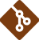
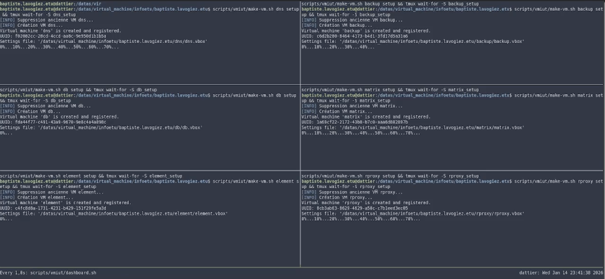
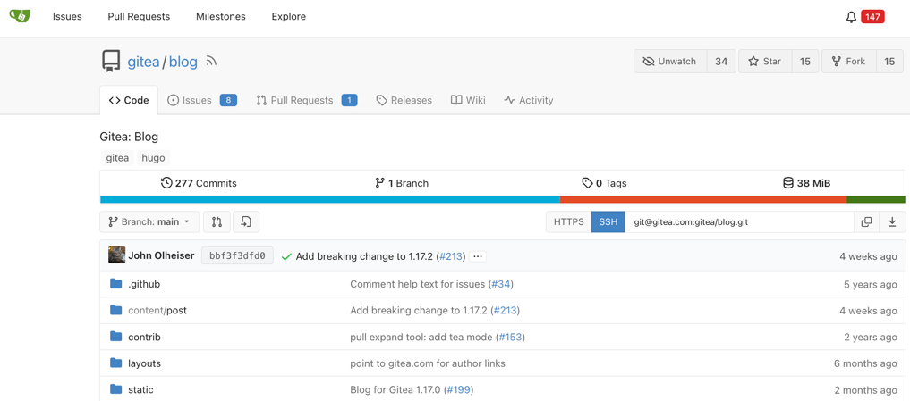
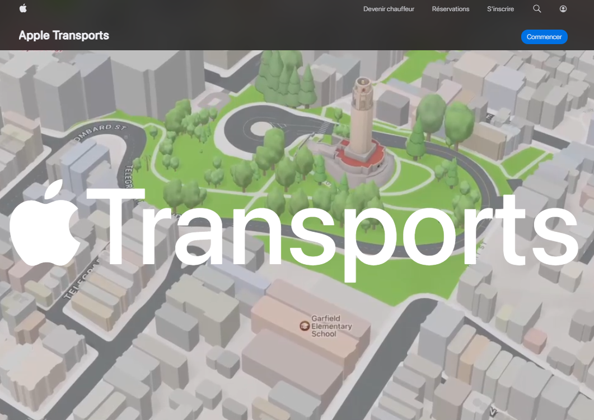
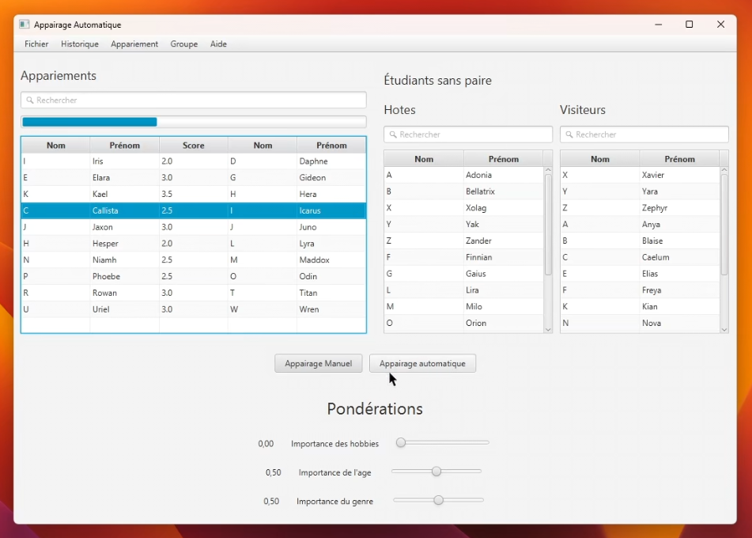
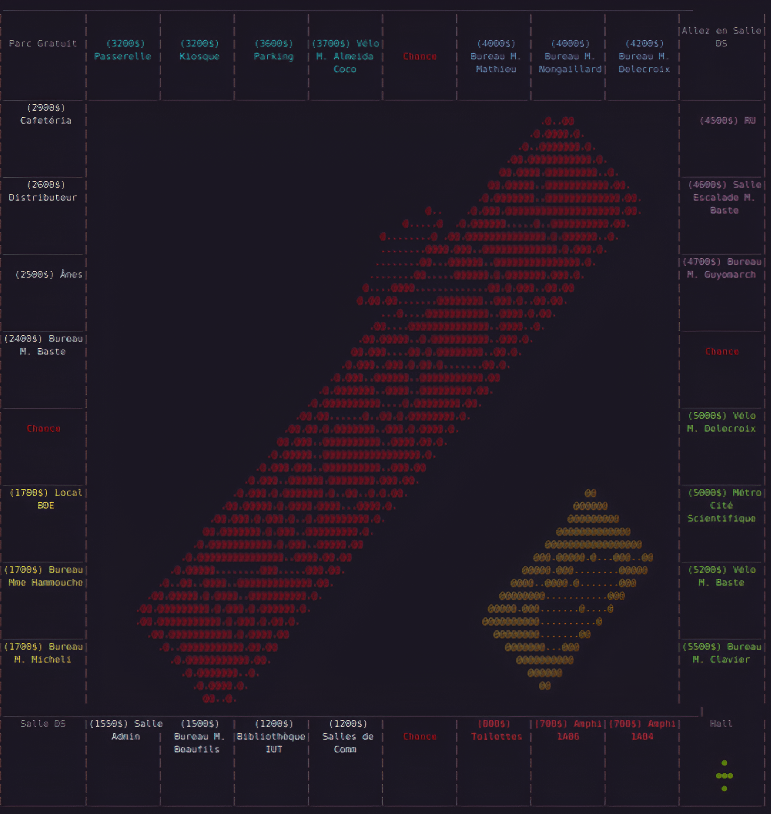
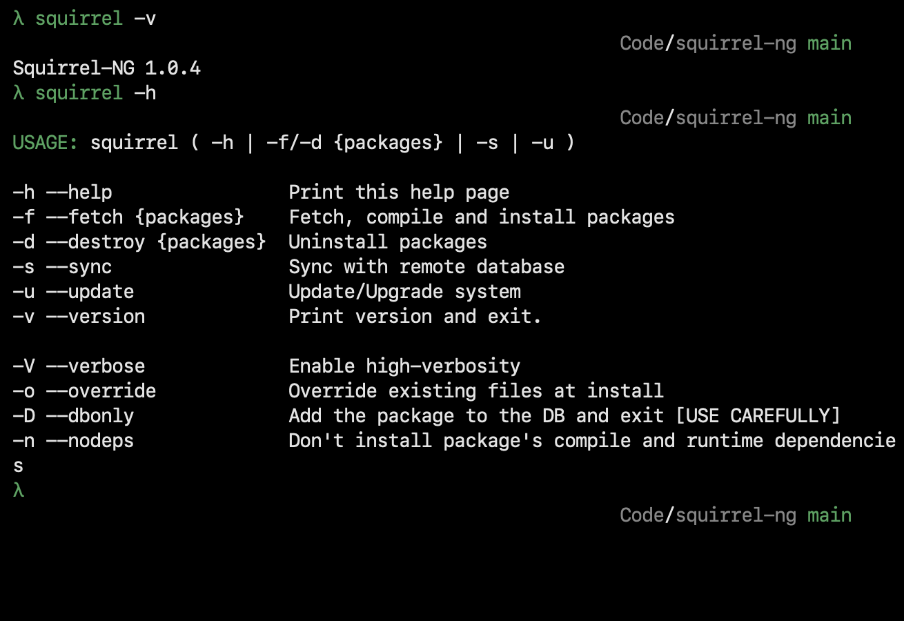

Ethan
Robert
Je suis étudiant en 2e année de BUT Informatique à l’IUT de Lille, passionné depuis toujours par les systèmes fiables, la robustesse des infrastructures et les tâches automatisées. Futur SRE 🚀
Je suis étudiant en 2e année de BUT Informatique à l’IUT de Lille, passionné depuis toujours par les systèmes fiables, la robustesse des infrastructures et les tâches automatisées. Futur SRE 🚀
J’ai passé mon enfance à expérimenter, détruire, et parfois (un peu) reconstruire avec les ordinateurs. Des fois j’étais conscient de ce que je faisais, des fois… moins.
C'est au lycée que je commence vraiment à m'intéresser à l'informatique professionnelle. Après un Bac NSI/Maths (Mention Très Bien) en 2024, j'ai intégré un BUT Informatique à l'IUT de Lille. C'est là que le déclic a eu lieu : le développement logiciel pur ne me suffisait plus. J'ai délaissé SOLID pour mieux me concentrer sur la solidité des infrastructures.
Aujourd'hui, je me spécialise dans le parcours "Déploiement d'applications communicantes". Mon objectif est clair : mettre mes années de bidouillage système et ma rigueur apprise au service de la culture DevOps/SRE. Je ne veux plus juste écrire du code, je veux construire les autoroutes sur lesquelles il circule, et m'assurer qu'elles soient bien robustes.
Je ne suis pas juste un étudiant qui suit des cours. Je suis un passionné qui déjà passé plus de 10 ans à explorer les entrailles des systèmes. Je sais ce que signifie "ça marchait en local", et mon but est que ça marche aussi (et surtout) en prod.
Note d'autodérision : Je promets de ne pas installer Gentoo sur les serveurs de l'entreprise. Enfin, normalement.
Administration, maintenance kernel, bootloader et services.
Conteneurisation, orchestration et construction d'images optimisées.
Orchestration de réseaux IPv4/IPv6, routing et proxy.
Virtualisation et création d'environnements d'exécution.
Gestion de configurations et déploiement d'infra-as-code
Scripting shell pour l'automatisation des tâches récurrentes du système.

Versionnement de code et configuration (GitOps).
Mise en place et maintenance des chaînes de livraison continue automatisées.

Installation complètement automatisée (avec développement d'un outil de provisionning) d'un serveur Matrix complet (Synapse — Element)

Installation d'un serveur Gitea virtualisé dans le cadre d'un projet de BUT1.

Une application de covoiturage fictive basée sur la philosophie de design d'Apple.

Un outil d'associations pour la constitution de groupes pour séjours linguistiques.

Un jeu vidéo inspiré du célèbre jeu de plateau Monopoly, qui se déroule au sein du département Informatique de l'IUT de Lille.

Un gestionnaire de paquets source-based pour une distribution Linux légère.